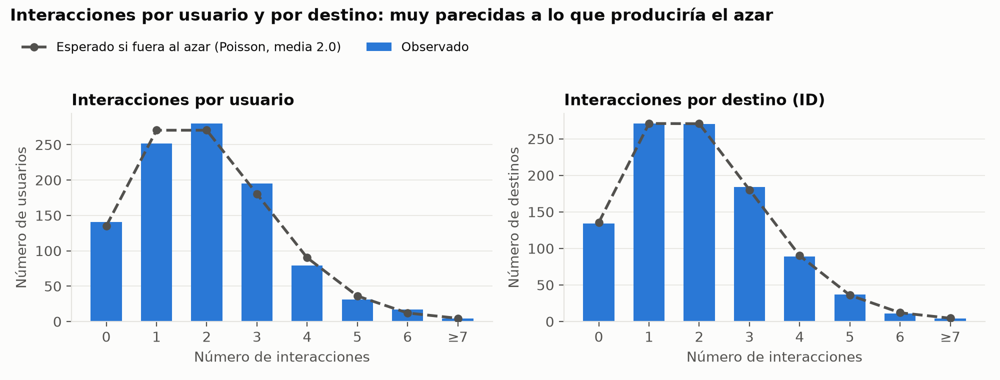
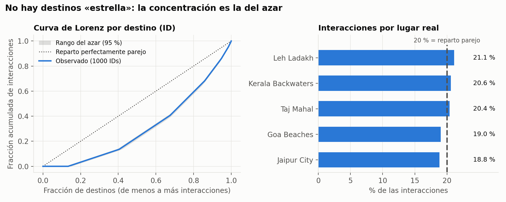

Módulo 3: Recomendación de destinos de viaje
Borrador de las secciones del informe escritas hasta ahora. Cada cifra sale de un script del repositorio y se puede regenerar.
Estado del borrador
| Sección del informe | Punto del enunciado | Estado |
|---|---|---|
| Datos | Descripción de los datos | Borrador listo |
| Caso de uso | Tarea 1 | Borrador listo |
| Análisis descriptivo | Tarea 2 + figura de cola larga | Borrador listo |
| Partición | Tarea 3 | Borrador listo |
| Preprocesamiento | Metodología | Borrador listo |
| Cacería de la alucinación | Sección común (aporte del módulo 3) | En curso: 5 hallazgos |
| Modelos de referencia y red neuronal | Tareas 4 y 5 | Pendiente |
| Evaluación | Tarea 6 | Pendiente |
| Preguntas de negocio | P1, P2, P3 | Pendiente |
| Fundamentación matemática | Del módulo | Teoría escrita; falta adaptarla |
1. Datos
1.1 Fuente y archivos
Usamos el Travel Recommendation Dataset («India Travel Recommender System Dataset»), publicado en Kaggle por Mehra (2024), en una única versión del 23 de enero de 2024. Son cuatro archivos CSV, descritos en la Tabla 1.
Tabla 1. Archivos del conjunto de datos
| Archivo | Qué contiene | Filas |
|---|---|---|
Expanded_Destinations.csv | El catálogo de destinos: un ID, el nombre del lugar, el estado de India, el tipo de destino (playa, histórico, ciudad, naturaleza o aventura), una puntuación de popularidad y la mejor época para visitarlo. | 1000 |
Final_Updated_Expanded_Users.csv | Los usuarios: un ID, nombre y correo (ficticios), las preferencias de viaje que declararon, el género y cuántos adultos y niños viajan. | 999 |
Final_Updated_Expanded_Reviews.csv | Las reseñas: qué usuario reseñó qué destino, con una calificación de 1 a 5 y un texto corto. | 999 |
Final_Updated_Expanded_UserHistory.csv | El historial de visitas: qué usuario visitó qué destino, en qué fecha y con qué calificación de la experiencia (1 a 5). | 999 |
Fuente: elaboración propia a partir de Mehra (2024). Evidencia: I-1.
Los dos primeros archivos describen quién es cada usuario y qué es cada destino. Los dos últimos registran interacciones, es decir, momentos en que un usuario tuvo contacto con un destino; son la materia prima del recomendador. Ninguna tabla tiene datos faltantes, IDs repetidos ni interacciones que apunten a usuarios o destinos inexistentes.
1.2 Lo que pide el enunciado, punto por punto
La Tabla 2 reúne las cifras que pide el enunciado.
Tabla 2. Cifras clave del conjunto de datos
| Medida | Valor |
|---|---|
| Usuarios en el catálogo (con ≥ 1 interacción) | 999 (858) |
| Destinos (IDs) en el catálogo (con ≥ 1 interacción) | 1000 (866) |
| Lugares reales distintos | 5 |
| Interacciones: reseñas + historial | 999 + 999 = 1998 |
| Escala de las calificaciones | enteros de 1 a 5 |
| Densidad de la matriz usuario–destino (una tabla / unión) | 0,10 % / 0,20 % |
| Interacciones por usuario activo (media) | 2,33 |
Fuente: elaboración propia a partir de Mehra (2024). Evidencia: I-3, I-11, I-12.
Número de usuarios, destinos e interacciones
Hay 999 usuarios, de los cuales 858 tienen al menos una interacción, y 1000 destinos (IDs), de los cuales 866 tienen al menos una. Pero esos 1000 IDs son en realidad 5 lugares (Taj Mahal, Goa Beaches, Jaipur City, Kerala Backwaters y Leh Ladakh), cada uno repetido 200 veces. En total hay 1998 interacciones: 999 reseñas y 999 visitas (Tabla 2).
Escala de las calificaciones
Ambas tablas de interacciones califican con enteros de 1 a 5. Las cinco notas aparecen casi con la misma frecuencia (≈ 20 % cada una). Una prueba chi-cuadrado, que compara lo observado con lo que pasaría si todas las notas fueran igual de probables, no rechaza que la distribución sea uniforme (p-valor = 0,66 en reseñas y p-valor = 0,12 en historial). Esto es poco habitual en datos reales, donde suelen predominar las notas altas.
Densidad de la matriz usuario–destino
Si se arma una tabla con un usuario por fila y un destino por columna, solo el 0,20 % de las celdas tiene información: 1998 / (999 × 1000). Con una sola de las tablas de interacciones sería el 0,10 % (Tabla 2). Es una matriz extremadamente dispersa: casi todo lo que el modelo debe predecir es desconocido. Además, 252 usuarios tienen una sola interacción y 134 destinos no tienen ninguna.
Variables disponibles de usuarios y destinos
La Tabla 3 lista las variables de cada entidad.
Tabla 3. Variables de destinos y usuarios
| De los destinos | Valores | De los usuarios | Valores |
|---|---|---|---|
Type | Beach, Historical, City, Nature, Adventure | Preferences | 3 perfiles: «Beaches, Historical», «City, Historical», «Nature, Adventure» |
State | 5 estados de India | Gender | Female 496, Male 503 |
Popularity | continua, de 7,5 a 9,5 | NumberOfAdults | 1 o 2 |
BestTimeToVisit | 5 temporadas | NumberOfChildren | 0, 1 o 2 |
Name | 5 nombres de lugar | Name, Email | ficticios (20 nombres repetidos); no se usan |
Fuente: elaboración propia a partir de Mehra (2024). Evidencia: I-13.
En el destino, Type, State, BestTimeToVisit y Name dicen lo mismo: cada lugar tiene un único tipo, estado y temporada. En la práctica, el destino tiene una sola variable categórica con 5 niveles (el lugar) más una numérica (Popularity).
1.3 ¿Reales o sintéticos?
Son sintéticos. Lo sostienen dos tipos de evidencia.
Lo que dice la fuente. El autor escribe que el conjunto «was generated for educational and research purposes» (fue generado con fines educativos) y que los perfiles se «enriquecieron» con diversidad de género (Mehra, 2024). No describe de dónde salieron los datos ni cómo se recolectaron.
Lo que muestran los datos. La Tabla 4 resume patrones que un registro real de turistas no tendría.
Tabla 4. Evidencia interna de que los datos son sintéticos
| Patrón | Detalle | Evidencia |
|---|---|---|
| 5 lugares clonados | El lugar de cada destino lo determina una fórmula, (ID − 1) mod 5; solo Popularity cambia entre copias. | I-2, I-3 |
| Ciclos exactos de 3 | Preferencias, fecha de visita y texto de la reseña se repiten en ciclos exactos (por ejemplo, 333 visitas en cada una de solo 3 fechas). | I-2 |
| Texto sin relación con el destino | «Loved the beaches!» aparece igual de seguido en el Taj Mahal que en las montañas (chi-cuadrado, p-valor = 0,88). | I-7 |
| Notas uniformes | ≈ 20 % cada nota (p-valor = 0,66 y 0,12); sin relación con Popularity (correlación 0,04 en reseñas y 0,03 en historial). | I-4, I-5 |
| Tablas que no se cruzan | Ninguna persona reseñó un destino que aparezca en su historial de visitas. | I-8 |
Fuente: elaboración propia a partir de Mehra (2024).
Hay una relación débil entre lo que el usuario dice preferir y lo que visita: el 42,3 % de sus interacciones van a un tipo de destino preferido, frente al 40 % que se esperaría por azar (permutación, p-valor = 0,019). Sin embargo, esa diferencia no se sostiene cuando se corrige por hacer varias pruebas a la vez (p-valor corregido = 0,11; sección 3.4). Es, en el mejor de los casos, una señal débil e incierta.
1.4 ¿Qué implica para nuestras conclusiones?
- No hablamos de turistas reales. Ningún resultado se puede usar para afirmar algo sobre los viajeros de India ni sobre los clientes de la empresa. El módulo demuestra el método (cómo se construye, evalúa y compara un recomendador), no un hallazgo de negocio.
- Hay muy poca señal que aprender. Si las interacciones son casi aleatorias, ningún modelo puede acertar mucho. Esperamos métricas bajas y diferencias pequeñas entre modelos. Por eso incluiremos un recomendador aleatorio como piso, y compararemos con 30 semillas antes de afirmar que un modelo es mejor que otro.
- Si la red supera a la popularidad, ya sabemos dónde buscar la causa. La única pista de señal es la débil relación entre preferencias y tipo de destino, y solo un modelo con variables de contenido podría aprovecharla. Lo más probable es que ningún modelo supere claramente al azar.
- El catálogo real tiene 5 lugares. Esto obliga a la decisión de modelado que sigue.
1.5 Decisiones sobre los datos
Cada decisión se cuenta como qué hicimos → por qué → qué descartamos → qué costo tiene. La Tabla 5 resume las cifras que las respaldan.
Decisión 1. Destinos: 1000 IDs para el modelo, 5 lugares para el cliente
Aunque el conjunto trae 1000 DestinationID, en realidad son solo 5 lugares. Si trabajáramos con los 5 lugares, casi todo lo que pide el enunciado dejaría de tener sentido: un top-K solo podría tener K entre 1 y 4, la cobertura saldría siempre en 100 %, no habría cola larga y la proyección de embeddings tendría apenas 5 puntos. Por eso el modelo y las métricas tratan cada ID como un ítem distinto: así hay 1000 candidatos y se puede medir de verdad si un modelo ordena mejor que el azar. Como para el negocio lo que importa es el lugar, al cliente se le muestran lugares (tomando el mejor puntaje de cada uno), y la concentración se analiza también por lugar.
Decisión 2. Interacciones: unir las reseñas y el historial de visitas
Para evaluar a un usuario necesitamos al menos 2 interacciones suyas: una para que el modelo lo conozca y otra que se esconde para ver si el modelo la adivina. Con una sola tabla, solo unos 260 usuarios cumplen esa condición; al unirlas son 606. La unión no genera duplicados, porque ningún par usuario–destino aparece en ambas tablas. El costo es mezclar dos tipos de evento (reseñar y visitar); guardamos una columna fuente por si después queremos separarlos.
Decisión 3. Calificaciones: toda interacción cuenta como positiva
La alternativa era quedarse solo con las notas 4 y 5 («le gustó»), pero eso solo tiene sentido si la nota contiene información. Aquí las notas son uniformes y no se relacionan con nada, así que filtrar eliminaría interacciones al azar sin dejar datos más limpios, y los usuarios evaluables bajarían de 606 a 181. Cada interacción se interpreta como «el usuario mostró interés en ese destino». La limitación es que el modelo no distingue una visita que gustó de una que no.
Tabla 5. Cifras que respaldan las decisiones sobre los datos
| Definición | Interacciones | Usuarios evaluables (≥ 2) | Comentario |
|---|---|---|---|
| Solo reseñas | 999 | 269 | |
| Solo historial | 999 | 258 | |
| Unión (elegida) | 1998 | 606 | sin duplicados |
| Unión, solo nota ≥ 3 | 1167 | 324 | |
| Unión, solo nota ≥ 4 | 781 | 181 | |
| Si se agrupara en 5 lugares | 1998 | — | K ≤ 4; HitRate@5 del azar = 100 % (trivial) |
Fuente: elaboración propia a partir de Mehra (2024). Evidencia: I-8, I-9, I-10.
2. Caso de uso (tarea 1)
Dónde y cuándo (en el negocio). La recomendación aparecería en la página de inicio de la app o la web de la empresa, en una sección «Destinos para ti», cuando el cliente entra a su cuenta. Para un cliente sin historial, se mostraría en cuanto indique sus preferencias de viaje.
En nuestro prototipo. La aplicación web simula ese momento sin registro ni base de datos. Se elige un usuario existente del conjunto de datos (el equivalente a «iniciar sesión») o se llena un formulario de preferencias para un cliente nuevo. Las recomendaciones se calculan al instante con el modelo guardado, y el perfil nuevo no se almacena.
Cuántos destinos. Al cliente se le muestran 3 lugares: una lista corta se lee como una recomendación y no como un catálogo. Como el catálogo real tiene solo 5 lugares, 3 ya es el 60 % de la oferta, una limitación del conjunto de datos. Para medir la calidad del modelo usamos una lista de 10 destinos (K = 10) sobre los 1000 IDs. Es el valor habitual en la literatura de recomendadores; He et al. (2017), por ejemplo, reportan sus resultados con listas de 10. Además permite distinguir un buen modelo del azar, que acertaría ≈ 1 % de las veces.
¿Se recomiendan lugares ya visitados? Sí, marcados como «Ya lo visitaste, ¿vuelves?». La Tabla 6 muestra por qué: uno de cada tres «próximos viajes» (33,8 %) es un regreso a un lugar conocido, y excluirlos dejaría además al 23 % de los usuarios con menos de 3 lugares para mostrar.
Tabla 6. Lugares nuevos disponibles si se excluyeran los ya visitados
| Lugares nuevos disponibles | Usuarios |
|---|---|
| 4 | 322 |
| 3 | 339 |
| 2 | 148 |
| 1 | 45 |
| 0 | 4 |
Fuente: elaboración propia a partir de Mehra (2024). Evidencia: I-14. El 33,8 % sale de una partición exploratoria (1 interacción escondida al azar por usuario con ≥ 2; 606 usuarios).
Qué sabemos del usuario en ese momento. De un cliente con historial conocemos sus preferencias declaradas, su género, cuántos adultos y niños viajan, y qué destinos reseñó o visitó antes. De un cliente nuevo solo sabemos lo que indicó en el formulario (preferencias y tamaño del grupo); ese caso se trata en la pregunta de negocio 1.
3. Análisis descriptivo (tarea 2)
Idea que guía el análisis. Para saber si un patrón dice algo sobre las preferencias de los viajeros, lo comparamos con lo que produciría el puro azar: las mismas 1998 interacciones repartidas sin ninguna preferencia. Si los datos se parecen al azar, el patrón no revela nada. Aquí se usan todas las interacciones, porque se describe el conjunto de datos y no se evalúan modelos.
3.1 Interacciones por usuario y por destino
Contando los 999 usuarios (incluidos los 141 sin interacciones), cada usuario tiene en promedio 2 interacciones, y cada destino (ID) también 2. Para saber si esa distribución dice algo, la comparamos con la que produciría el azar. Si las interacciones se hubieran sorteado al azar, cada una de las $N = 1998$ caería en cualquiera de los 1000 destinos con la misma probabilidad, $p = 1/1000 = 0{,}001$. Así, el número de interacciones de un destino concreto es el número de «aciertos» en 1998 intentos independientes con probabilidad 0,001: una variable binomial, $B(N = 1998,\ p = 0{,}001)$.
Cuando $N$ es grande y $p$ es pequeño, la binomial se aproxima muy bien por una distribución de Poisson con media $\lambda = N \cdot p$, cuya fórmula es más simple:
Con los usuarios pasa lo mismo: cada interacción pertenece a cualquiera de los 999 usuarios con $p = 1/999$, así que $\lambda = 1998/999 = 2$. Multiplicando $P(k)$ por el número de destinos (1000) o de usuarios (999) se obtienen los valores esperados de la Tabla 7. Por ejemplo, se esperarían $1000 \times e^{-1{,}998} \times 1{,}998 \approx 270{,}9$ destinos con una sola interacción, y hay 271.
Tabla 7. Valores esperados por azar (Poisson) frente a los observados
| Interacciones (k) | Usuarios esperados (λ = 2) | Usuarios observados | Destinos esperados (λ = 1,998) | Destinos observados |
|---|---|---|---|---|
| 0 | 135,2 | 141 | 135,6 | 134 |
| 1 | 270,4 | 252 | 270,9 | 271 |
| 2 | 270,4 | 280 | 270,7 | 270 |
| 3 | 180,3 | 195 | 180,3 | 184 |
| 4 | 90,1 | 79 | 90,0 | 89 |
| 5 | 36,1 | 31 | 36,0 | 37 |
| 6 | 12,0 | 17 | 12,0 | 11 |
| ≥ 7 | 4,5 | 4 | 4,5 | 4 |
Fuente: elaboración propia a partir de Mehra (2024). Evidencia: D-1.
La Figura 1 muestra que la forma de ambas distribuciones es muy parecida a la del azar, y las pruebas de bondad de ajuste (chi-cuadrado) no permiten rechazar que provengan de una Poisson (p-valor = 0,28 por usuario y p-valor = 0,998 por destino). Es decir, no hay destinos más populares ni usuarios más activos de lo que produciría el azar, y por eso no hay cola larga. Esto no dice si cada usuario prefiere ciertos tipos de destino; esa relación se analiza aparte.

Fuente: elaboración propia a partir de Mehra (2024). Evidencia: D-1. Regenerable con src/descriptivo.py.
En datos reales de turismo, unos pocos destinos famosos y unos pocos viajeros frecuentes concentran gran parte de la actividad, lo que produce una cola larga: muchos destinos y usuarios con muy poca actividad y unos pocos con muchísima.
3.2 Concentración en los destinos populares
La pregunta es si unos pocos destinos se llevan la mayoría de las interacciones. Se responde con tres medidas, y las tres se comparan con lo que daría el azar: repartir las mismas 1998 interacciones entre los 1000 destinos al azar, 2000 veces (simulación).
- Curva de Lorenz (Figura 2, izquierda). Se ordenan los destinos de menos a más interacciones. Cada punto dice: «el x % de los destinos con menos interacciones acumula el y % de todas las interacciones». Si todos tuvieran lo mismo, la curva sería la diagonal punteada; cuanto más se hunde por debajo de ella, más concentrada está la actividad.
- Coeficiente de Gini. Resume la curva en un número: el doble del área entre la diagonal y la curva. Vale 0 si el reparto es perfectamente parejo y 1 si un solo destino se lo lleva todo.
- Participación del top 10 %. Qué porcentaje de las interacciones se llevan los 100 destinos con más interacciones. Es la medida más fácil de comunicar al negocio.
Cómo se obtiene el rango del azar. Se reparten las mismas 1998 interacciones entre los 1000 destinos como si cada una lanzara un dado de 1000 caras (distribución multinomial), se calcula el Gini de ese reparto y se repite 2000 veces. Se ordenan los 2000 valores y se quita el 2,5 % de cada extremo: lo que queda, de 0,369 a 0,402 (percentiles 2,5 y 97,5), es lo que la pura suerte produce. El p-valor sale de las mismas simulaciones: 1219 de 2000 tuvieron un Gini igual o mayor que el observado (1219/2000 = 0,61). Así, los valores observados (porcentaje de cada lugar, top 10 %, Gini, curva y barras azules) salen de contar los datos reales; solo la referencia (rango, banda gris, top 10 % del azar y p-valores) sale de la simulación. El 20 % por lugar es simplemente 1/5. Detalle paso a paso en la teoría, sección 22.9.

Fuente: elaboración propia a partir de Mehra (2024). Evidencia: D-2. La banda gris es el 95 % de 2000 simulaciones de reparto aleatorio.
Tabla 8. Concentración observada frente a la del azar
| Nivel | Gini observado | Gini del azar (95 %) | p-valor | Top 10 % observado | Top 10 % azar |
|---|---|---|---|---|---|
| 1000 IDs | 0,383 | 0,369–0,402 | 0,61 | 23,6 % | 23,8 % |
| 5 lugares | 0,025 | 0,009–0,040 | 0,37 | — | — |
Fuente: elaboración propia a partir de Mehra (2024). Evidencia: D-2. Gini: 0 = reparto parejo, 1 = todo en un destino. p-valor: proporción de las 2000 simulaciones al azar con un Gini igual o mayor que el observado. El top 10 % no aplica a 5 lugares (sería medio lugar).
La curva de Lorenz parece mostrar concentración: el 13,4 % de los destinos no tiene interacciones y el 10 % con más se lleva el 23,6 %. Pero la referencia correcta no es la diagonal, sino el azar, porque con 2 interacciones por destino en promedio la suerte ya deja destinos con 0 y otros con 7 (la Poisson de 3.1). La curva queda dentro de la banda del azar, y la Tabla 8 lo confirma: el Gini (0,383) cae en el rango del azar (0,369–0,402, p-valor = 0,61) y el top 10 % es casi idéntico (23,6 % frente a 23,8 %). Por lugar real ocurre lo mismo: los 5 lugares reciben entre el 18,8 % y el 21,1 %, cerca del 20 % parejo (p-valor = 0,37). En conclusión, no hay destinos «estrella»: la popularidad tendrá poco que aprovechar como recomendador, y esta es la base de la pregunta de negocio 2 (concentración de la demanda).
3.3 Usuarios con pocas interacciones
De los 999 usuarios, 141 (14,1 %) no tienen ninguna interacción, 252 (25,2 %) tienen exactamente una y, en total, el 67,4 % tiene 2 o menos. Solo 52 (5,2 %) tienen 5 o más; la mediana es 2 y el máximo, 7 (Tabla 9). Esto explica por qué el recomendador tiene tan poca información por usuario, y por qué conviene evaluar por separado a los usuarios con pocas y con muchas interacciones (tarea 6).
Tabla 9. Usuarios según su número de interacciones
| Usuarios con… | Usuarios | % del total |
|---|---|---|
| 0 interacciones | 141 | 14,1 % |
| exactamente 1 | 252 | 25,2 % |
| 2 o menos | 673 | 67,4 % |
| 3 o más | 326 | 32,6 % |
| 5 o más | 52 | 5,2 % |
Fuente: elaboración propia a partir de Mehra (2024). Evidencia: D-3.
3.4 Hipótesis sobre qué explica las preferencias
Planteamos seis hipótesis razonables sobre qué haría que un viajero prefiera un destino. Cada una se contrasta así: la hipótesis nula (H₀) dice que no hay relación, la alternativa (H₁) dice que sí la hay, y la prueba mide si los datos son lo bastante raros bajo H₀ como para rechazarla, con un nivel de significancia α = 0,05 (Tabla 10).
Tabla 10. Hipótesis sobre las preferencias, pruebas y decisión
| Hipótesis | H₀ y H₁ | Prueba y estadístico | Resultado | p-valor | p-valor corregido | Decisión (α = 0,05) |
|---|---|---|---|---|---|---|
| H1. Visitan los tipos de destino que dicen preferir | H₀: el tipo visitado es independiente del perfil de preferencias H₁: el tipo visitado depende del perfil | Chi-cuadrado de independencia, perfil × tipo: χ² = 18,35; gl = 8 | coinciden 42,3 % frente a ≈ 40 % del azar | 0,019 | 0,113 | no se rechaza H₀ |
| H2. Con niños eligen más playa y naturaleza | H₀: el tipo visitado es independiente de viajar con niños H₁: depende de viajar con niños | Chi-cuadrado de independencia, con/sin niños × tipo: χ² = 6,13; gl = 4 | playa y naturaleza: 38,9 % con niños frente a 41,1 % sin niños | 0,190 | 1,000 | no se rechaza H₀ |
| H3. Viajar solo o con otro adulto cambia el destino | H₀: el tipo visitado es independiente del número de adultos H₁: depende del número de adultos | Chi-cuadrado de independencia, adultos (1 o 2) × tipo: χ² = 6,60; gl = 4 | — | 0,159 | 0,952 | no se rechaza H₀ |
| H4. El género cambia el destino | H₀: el tipo visitado es independiente del género H₁: depende del género | Chi-cuadrado de independencia, género × tipo: χ² = 0,40; gl = 4 | — | 0,982 | 1,000 | no se rechaza H₀ |
H5. Mayor Popularity atrae más interacciones | H₀: ρ = 0 (no hay relación) H₁: ρ ≠ 0 (bilateral) | Correlación de Spearman entre Popularity e interacciones (1000 IDs) | ρ = −0,011 | 0,721 | 1,000 | no se rechaza H₀ |
| H6. Visitan en la mejor temporada del destino | H₀: el % de visitas en temporada es el del azar (72,6 %) H₁: es mayor que el del azar (unilateral) | Permutación, 2000 repeticiones (solo historial) | 73,0 % en temporada | 0,295 | 1,000 | no se rechaza H₀ |
Fuente: elaboración propia a partir de Mehra (2024). Evidencia: D-4. En las cuatro pruebas chi-cuadrado, la menor frecuencia esperada es 123, muy por encima del mínimo de 5 que exige la prueba. p-valor corregido = mín(1; 6 × p-valor), corrección de Bonferroni con m = 6.
Qué es el p-valor corregido. Si se hacen muchas pruebas, alguna saldrá «significativa» por pura suerte: con 6 pruebas y α = 0,05, la probabilidad de al menos un falso positivo es 1 − 0,956 ≈ 26 %. La corrección de Bonferroni lo evita multiplicando cada p-valor por el número de pruebas, p-valor corregido = mín(1; 6 × p-valor) (Bland y Altman, 1995), y se rechaza H₀ solo si el p-valor corregido es menor que 0,05. Es lo mismo que exigir que el p-valor original sea menor que 0,05/6 ≈ 0,0083. Por ejemplo, H1 tiene p-valor = 0,019: sola parecería significativa, pero corregida queda en 6 × 0,019 = 0,113 > 0,05.
Decisión. En las seis hipótesis no hay evidencia suficiente para rechazar H₀: ningún p-valor corregido baja de 0,05. Esto no demuestra que la relación no exista; dice que estos datos no alcanzan para afirmarla.
Conclusión de la tarea 2. Ninguna de las explicaciones razonables de las preferencias se sostiene en estos datos. Las interacciones se comportan como si se hubieran asignado al azar, lo que es coherente con que el conjunto sea sintético. Para el modelado, esto significa que esperamos que ningún modelo supere con claridad al azar, y que cualquier diferencia pequeña debe confirmarse con las 30 semillas antes de afirmarse.
4. Partición (tarea 3)
Cómo las partimos: «dejar uno fuera» por usuario. A cada usuario con al menos 2 interacciones le escondemos una, elegida al azar, para prueba. Si tiene al menos 3, le escondemos otra para validación. Todo lo demás va a entrenamiento. La Tabla 11 muestra tres usuarios reales. Por ejemplo, la usuaria 1 visitó Goa Beaches y el Taj Mahal: el modelo aprende de Goa, y al final comprobamos si entre sus 10 recomendaciones aparece el Taj Mahal que le escondimos.
Tabla 11. Ejemplos reales de la partición
| Usuario | Interacciones | Entrenamiento | Validación | Prueba |
|---|---|---|---|---|
| 6 | 1 | Jaipur City (963) | — | — |
| 1 | 2 | Goa Beaches (467) | — | Taj Mahal (941) |
| 16 | 4 | Leh Ladakh (970), Taj Mahal (176) | Leh Ladakh (40) | Jaipur City (113) |
Fuente: elaboración propia a partir de Mehra (2024). Evidencia: data/processed/interacciones.csv (semilla 0). Entre paréntesis, el ID del destino.
Qué pasa con los usuarios que tienen una sola interacción. Son 252. Su interacción se usa para entrenar, porque le enseña al modelo sobre ese destino. Para algunos destinos es la única información disponible: el destino 963 solo aparece en entrenamiento por el usuario 6. Lo que no se puede es evaluarlos, porque no queda nada que esconderles.
Por qué esta forma y no otra. La Tabla 12 compara las alternativas.
Tabla 12. Comparación de estrategias de partición
| Estrategia | Entrenamiento / validación / prueba | Usuarios de prueba | Usuarios de prueba sin entrenamiento | IDs de prueba no vistos |
|---|---|---|---|---|
| Temporal | No viable: el historial tiene solo 3 fechas, repetidas en ciclo, y las reseñas no tienen fecha. | |||
| Aleatoria 80/10/10 | 1586 / 213 / 199 | 181 | 18,8 % | 21,1 % |
| Dejar uno fuera (elegida) | 1066 / 326 / 606 | 606 | 0 % | 33,7 % |
Fuente: elaboración propia a partir de Mehra (2024). Evidencia: I-15 (semilla 0).
La partición aleatoria dejaría a casi uno de cada cinco usuarios de prueba sin nada en entrenamiento, y solo evaluaría 181 usuarios. Dejar uno fuera garantiza que todo usuario evaluado tiene historial, que es la situación del caso de uso (un cliente que inicia sesión y ya ha viajado). También es el esquema que usan He et al. (2017).
Un hallazgo que sale de la partición. Uno de cada tres destinos de prueba (33,7 %) es un ID que nadie tocó en entrenamiento (Tabla 12). Un modelo que solo conoce IDs, como la popularidad o la factorización de matrices, no puede recomendar algo que nunca vio, así que su tasa de aciertos tiene un techo cercano al 66 %. Un modelo que conoce el contenido («este ID es un Taj Mahal») no tiene ese techo. Es una razón concreta para usar variables de contenido en la red.
Cómo se usan los conjuntos. Elegimos la configuración de cada modelo entrenando con el conjunto de entrenamiento y midiendo en validación. Con la configuración ganadora volvemos a entrenar con entrenamiento + validación (1392 interacciones) y medimos una sola vez en prueba. Todos los modelos y las 30 repeticiones con semillas distintas usan exactamente la misma partición.
5. Preprocesamiento
El script src/preprocesar.py aplica las decisiones anteriores y genera los archivos que leen todos los modelos y la app. Usar los mismos archivos es lo que garantiza la comparación justa. Las transformaciones son:
- Se unen reseñas e historial, y cada interacción queda marcada con su conjunto (entrenamiento, validación o prueba).
- Se eliminan el nombre y el correo de los usuarios: son ficticios (20 valores repetidos) y no aportan nada.
- Las preferencias pasan de texto («Beaches, Historical») a cinco casillas, una por tipo de destino, marcadas o no. Así el modelo acepta cualquier combinación, incluida una que un cliente nuevo marque en la app aunque no exista en los datos.
- Los IDs de usuarios (1–999) y de destinos (1–1000) son consecutivos, así que se usan directamente como posición.
El script verifica automáticamente que ningún par de validación o prueba aparezca en entrenamiento, que todo usuario evaluado tenga historial, que haya una sola interacción por usuario en validación y en prueba, y que no se pierda ni se duplique ninguna interacción. Si una verificación falla, se detiene.
Limitación. En los datos solo hay 3 combinaciones de preferencias. Un perfil nuevo con otra combinación (por ejemplo, Beach + Nature) obliga al modelo a extrapolar.
6. Cacería de la alucinación (aporte del módulo 3)
El enunciado pide documentar hallazgos en los que una herramienta de IA generó algo incorrecto, impreciso, desactualizado o subóptimo durante el trabajo. Para cada hallazgo se reportan el prompt literal, la respuesta, cómo se sospechó, la evidencia, la corrección y la lección aprendida. La Tabla 13 resume los hallazgos del módulo 3, todos de la IA usada en el desarrollo (Claude, en Claude Code).
Tabla 13. Resumen de los hallazgos del módulo 3
| # | Hallazgo | Categoría del enunciado | Gravedad |
|---|---|---|---|
| 1 | «Las preferencias no tienen relación con las visitas», y luego «la relación es significativa» | Datos del mundo real (características del conjunto) | Alta |
| 2 | Correlación nota–popularidad reportada de forma incompleta | Datos del mundo real | Baja |
| 3 | Propuesta de un «hallazgo» que no cumple la definición del enunciado | Ninguna de las categorías (interpretación del enunciado) | Media |
| 4 | Propuso «escoger el dataset» cuando el enunciado ya lo fija | Datos del mundo real | Baja |
| 5 | Hipótesis enunciadas con dirección («más») contrastadas con pruebas sin dirección | Matemáticas (estadística) | Media |
Fuente: elaboración propia a partir de la conversación de desarrollo del 23 y 24-nov-2026.
Hallazgo 1. Conclusión estadística prematura sobre preferencias y visitas
- Prompt (literal)
Quiero que empezemos paso a paso, además, cabe recalcar que apenas estoy aprendiendo por lo que quiero que seas muy explícito con cada decisión y cosa que hagas pues nunca he trabajado en un sistema de recomendación, podemos subir a esa misma carpeta de modulo3_recomendacion una parte de teoría para yo ir allí y leer todo lo referente a al fundamentación matemática, que se usa para un sistema de recomendación, como hacerlo y que se relacione con este trabajo. descargué el zip con los datos y está en modulo3_recomendacion/data/raw
- Respuesta de la IA
Las visitas no tienen relación con las preferencias. Solo el 41,7 % de las visitas coincide con lo que el usuario dice que le gusta, y por puro azar se esperaría un 40 %.
Más adelante, al rehacer el cálculo, la IA pasó al extremo opuesto y escribió que había «una relación débil pero real» y «estadísticamente significativa» (p-valor = 0,019).- Cómo se sospechó
- Preguntamos de dónde salían las cifras («¿hiciste un análisis descriptivo y no me mostraste?»). La primera conclusión no tenía ninguna prueba estadística y no estaba guardada en ningún script. Al escribir el script reproducible apareció otro resultado.
- Evidencia
- (a) La cifra del 41,7 % salía solo del historial; con la unión de tablas, que es la que usa el modelo, la coincidencia es del 42,3 %, con p-valor = 0,019 en las pruebas binomial, de permutación y chi-cuadrado (I-6). (b) Dentro del conjunto de seis hipótesis de la tarea 2, la corrección de Bonferroni lleva ese p a 0,11 (D-4; Bland y Altman, 1995). Ninguna de las dos afirmaciones de la IA era correcta tal como se dijo.
- Corrección
- «Hay una diferencia pequeña (42,3 % frente a 40 %) que no resiste la corrección por pruebas múltiples.» Se corrigieron
DECISIONES.mdy el borrador, y la corrección quedó señalada con ⚠️. - Lección
- Toda afirmación sobre los datos debe salir de un script versionado que se pueda revisar, usar el mismo subconjunto de datos que usará el modelo y corregirse por pruebas múltiples cuando se contrastan varias hipótesis.
Hallazgo 2. Cifra de correlación incompleta
- Prompt (literal)
por último, es importante que vayas teniendo en cuenta ideas para escribir todo lo que se necesite para este módulo 3 del informe por tanto. Una pregunta ¿Cómo sabes que son sintéticos los datos?
- Respuesta de la IA
La popularidad del destino no tiene relación con la calificación: la correlación es 0,03.
- Cómo se sospechó
- Preguntamos «¿dónde se vio su correlación con popularity?». Al pedir la tabla completa aparecieron dos correlaciones, no una.
- Evidencia
- I-5: Pearson 0,044 en reseñas (p-valor = 0,17) y 0,026 en historial (p-valor = 0,41). La IA solo había reportado la del historial, sin p-valor ni tamaño de muestra, y esa cifra pasó a nuestra redacción de las decisiones.
- Corrección
- «Correlación de 0,03 a 0,04, no significativa en ninguna de las dos tablas.» La conclusión no cambia, pero la cifra quedó completa.
- Lección
- Pedir siempre la tabla completa (todas las fuentes, con p y n) antes de copiar una cifra resumida al informe.
Hallazgo 3. Un «hallazgo» que no cumplía la definición del enunciado
- Prompt (literal)
por último, es importante que vayas teniendo en cuenta ideas para escribir todo lo que se necesite para este módulo 3 del informe por tanto. Una pregunta ¿Cómo sabes que son sintéticos los datos?
- Respuesta de la IA
- En el archivo de ideas del informe escribió:
Candidato fuerte: el título y la descripción del dataset («India Travel Recommender System», reseñas «generadas por usuarios», un historial de viajes) sugieren datos de comportamiento real con una señal aprovechable, pero el análisis muestra 5 destinos clonados […]
- Cómo se sospechó
- Al preparar este borrador se leyó la sección común del enunciado (pp. 9–10), que hasta entonces no se había consultado.
- Evidencia
- El enunciado pide documentar «hallazgos en los que una IA generó algo incorrecto, impreciso, desactualizado o subóptimo». Una descripción engañosa de un conjunto de datos en Kaggle no es un error de una IA.
- Corrección
- Se retiró como hallazgo. El hecho (la descripción de Kaggle no coincide con los datos) sigue en la sección «Datos» como evidencia de que el conjunto es sintético.
- Lección
- Leer la definición exacta de cada entregable en la fuente primaria (el enunciado) antes de aceptar una propuesta de la IA sobre cómo cumplirlo.
Hallazgo 4. Propuso escoger un dataset que ya estaba fijado
- Prompt (literal)
Hola, recuerdas donde nos quedamos?
- Respuesta de la IA
Arrancar el módulo 3 (recomendación): revisar el enunciado en
docs/instrucciones_trabajo_3.pdf, escoger el dataset y montar el modelo de referencia.- Cómo se sospechó
- La propia IA lo notó en el turno siguiente, al leer el README del módulo y el enunciado.
- Evidencia
- El enunciado (p. 5) dice «Usarán el conjunto Travel Recommendation Dataset […] publicado en Kaggle por Aman Mehra», y el README del módulo, escrito en la sesión anterior, ya lo citaba.
- Corrección
- «El dataset no hay que escogerlo: el enunciado fija el Travel Recommendation Dataset.»
- Lección
- Antes de proponer próximos pasos, verificar qué está ya decidido en el repositorio y en el enunciado.
Hallazgo 5. Hipótesis que no coincidían con la prueba usada
- Prompt (literal)
sigamos con el análisi descriptivo
- Respuesta de la IA
- Planteó seis hipótesis y las resumió en una tabla con la columna «¿Se sostiene?», sin escribir H₀ ni H₁:
H2. Con niños eligen más playa y naturaleza — no (de hecho, un poco menos)
H5. MayorPopularityatrae más interacciones — no (ρ = −0,01) - Cómo se sospechó
- Al revisar el borrador pedimos mostrar de forma explícita la hipótesis nula, la alternativa y la prueba de cada fila («no se muestra explícitamente las hipótesis nula y alternativa ni que prueba se usa»). Al escribirlas, la hipótesis enunciada y lo que la prueba contrasta no coincidían.
- Evidencia
- (a) H2 afirma una dirección («más playa y naturaleza»), pero se contrastó con un chi-cuadrado de independencia con/sin niños × tipo (χ² = 6,13; gl = 4), que detecta cualquier diferencia en el reparto de los 5 tipos y no distingue si es «más» o «menos». (b) H5 afirma «mayor
Popularity→ más interacciones», pero la correlación de Spearman se calculó bilateral (H₁: ρ ≠ 0). (c) La tabla no mostraba H₀ ni H₁, así que el desajuste no se veía. Código:src/descriptivo.py, funcións4_hipotesis; resultados en D-4. - Corrección
- La Tabla 10 ahora escribe H₀ y H₁ tal como las contrasta cada prueba (por ejemplo, H2: «el tipo visitado es independiente de viajar con niños» frente a «depende»), junto con el estadístico, el p-valor, el p-valor corregido y la decisión. Las conclusiones no cambian: en las seis no hay evidencia suficiente para rechazar H₀, y en H2 el dato va incluso en la dirección contraria (38,9 % con niños frente a 41,1 % sin niños).
- Lección
- Escribir H₀ y H₁ antes de elegir la prueba, y comprobar que la prueba contraste exactamente esa alternativa (con dirección o sin ella). Una tabla de «¿se sostiene?» sin hipótesis explícitas esconde este tipo de error.
Verificaciones hechas que no encontraron error
El enunciado pide documentar también las verificaciones. Estas confirmaron lo que había dicho la IA:
- El «40 % esperado por azar» de H1: recalculado con la distribución real de tipos y con 5000 permutaciones, da 40,1 % (I-6).
- La forma de Poisson como referencia del azar: el ajuste por destino da p-valor = 0,998 (D-1).
- La partición: las verificaciones automáticas de
src/preprocesar.pyno encontraron fugas.
Pendiente de verificar (categoría «Bibliografía»). Las referencias del documento de teoría del módulo las propuso la IA y todavía no se han contrastado con su fuente primaria (DOI, volumen, páginas). Hay que hacerlo antes de entregar; si alguna falla, es un hallazgo nuevo.
7. Lo que falta
| Sección | Contenido pendiente |
|---|---|
| Tarea 4 · Modelos de referencia | Recomendador aleatorio (piso), popularidad y factorización de matrices. |
| Tarea 5 · Red neuronal | Modelo de dos torres o NCF con variables de contenido; justificar la dimensión de los embeddings, los negativos y la pérdida. |
| Tarea 6 · Evaluación | Precision, Recall y NDCG@K; cobertura; grupos de pocas y muchas interacciones; 30 semillas; 5 usuarios de ejemplo; t-SNE. |
| P1 · Usuarios nuevos | Simular el arranque en frío con los 606 usuarios de prueba; comparar ≥ 2 estrategias. |
| P2 · Concentración | Gini de las recomendaciones (por ID y por lugar) y efecto en la capacidad de las rutas. |
| P3 · Campaña | Grupo objetivo y conversiones esperadas, con los supuestos explícitos. |
| Fundamentación matemática | Adaptar la teoría (factorización de matrices, BCE/BPR, métricas) al modelo final. |
| Figuras comunes | Arquitectura, curvas de aprendizaje, búsqueda de hiperparámetros, diagramas de caja de las 30 semillas. |
Referencias
Bland, J. M., & Altman, D. G. (1995). Multiple significance tests: The Bonferroni method. BMJ, 310(6973), 170. https://doi.org/10.1136/bmj.310.6973.170
He, X., Liao, L., Zhang, H., Nie, L., Hu, X., & Chua, T.-S. (2017). Neural collaborative filtering. En Proceedings of the 26th International Conference on World Wide Web (pp. 173–182). https://doi.org/10.1145/3038912.3052569
Mehra, A. (2024). Travel recommendation dataset [Conjunto de datos]. Kaggle. https://www.kaggle.com/datasets/amanmehra23/travel-recommendation-dataset
Las dos primeras referencias (volumen, páginas y DOI) deben verificarse en la fuente primaria antes de la entrega, como se indica en la sección 6.